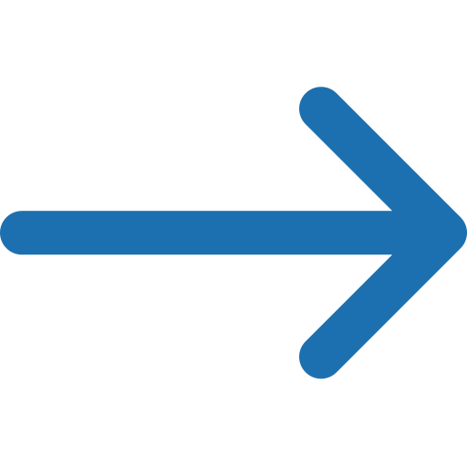
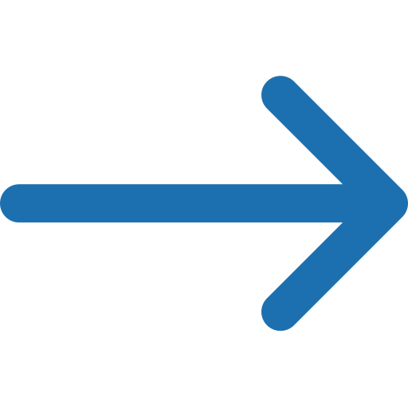

{{article.publishedAt|truncate(10, False, '', 0) }}
{{article.title |truncate(64, False, '...', 0)}}
{{article.description |truncate(96, False, '...', 0)}}
view article
{{article.publishedAt|truncate(10, False, '', 0) }}
{{article.description |truncate(96, False, '...', 0)}}
view article
{{source.description}}
{{source.category}}
Go to Website {% endfor %} {% endmacro %} {% macro displayNav(nav_list) %} {% for nav in nav_list %}{{nav.description}}
Go to Website {% endfor %} {% endmacro %}